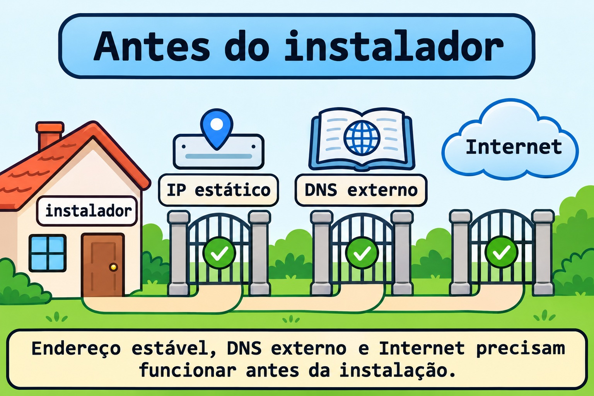

Aula 20.1 · Instalar em uma VM limpa
O coração desta aula: criar a VM 240, preparar seus pré-requisitos e abrir um cluster NS8 identificado.
| Ficha | Plano de trabalho |
|---|---|
| Módulo | M20 · NethServer 8 por dentro, aula 1 de 7 |
| Quando | Semana 27 |
| Ao final | criar a VM 240, preparar seus pré-requisitos e abrir um cluster NS8 identificado. |
| Pré-requisitos | M18 e M19 corrigidos; inventário e acesso ao console autorizados |
| Duração | 150–180 minutos, além dos downloads |
| Snapshot | m20a1-inicio e m20a1-fim; somente VM 240 |
A VM 240, ns8-1, será o primeiro nó; a VM 241, ns8-2, só entra na 20.7. Nome da VM, hostname, ID do nó e ID da aplicação são campos diferentes.
Os comandos do Proxmox estão marcados como HOST. Os comandos NS8 usam Bash como root na VM, após sudo -i; não são comandos para o host de virtualização.
Use o Guia de bancada M20. O endereço isolado da 240 é 192.0.2.240; a gestão tem endereço real reservado e saída para Internet.
Não execute o próximo bloco se uma guarda falhar. Resultados esperados abaixo não são uma alegação de laboratório já executado.
1 · Aquecimento
- O kernel de um LXC pertence ao contêiner ou ao host?
- Um endereço recebido por DHCP é uma reserva estática configurada no nó?
- O DNS do nó pode depender de uma aplicação que só sobe depois do próprio NS8?
2 · Por que importa
NS8 usa um sistema Linux para coordenar aplicações em contêineres. Uma instalação sobre um servidor já ocupado mistura dependências e dificulta atribuir a causa de uma falha.
Aqui a VM é nova. Os serviços do M19 permanecem na 204, sem converter essa máquina em um nó NS8.
Ponte Windows
Pense na VM como um servidor completo com seu próprio sistema operacional. O painel NS8 administra o que roda dentro dele; ele não substitui o console de recuperação nem o inventário do hipervisor.
3 · Modelo mental

A VM 240 possui kernel próprio; o NS8 e suas aplicações usam esse kernel. Instalar NS8 em Proxmox LXC não é uma implantação suportada.
Um nó sozinho já forma um cluster funcional. A palavra cluster aqui descreve o plano de controle, não uma promessa automática de alta disponibilidade.
4 · O essencial
| Item | Contrato do laboratório |
|---|---|
| VM 240 | ns8-1; Rocky Linux 9 limpo; 4 vCPU; 8 GiB RAM; disco 80 GiB |
| Máquina | q35; OVMF; VirtIO; CPU x86-64-v2-AES; vm-hdd |
| net0 | vmbr0; gestão com IP real estático e gateway |
| net1 | vmbr17; 192.0.2.240/24; sem gateway |
| DNS | externo ao NS8, alcançável em 192.0.2.204 |
| FQDN | ns8-1.lab.test; não é nome público para ACME |
Rocky × Debian
O módulo usa Rocky Linux 9 nos dois nós. A documentação também contempla Debian 13, mas não misturaremos famílias em um cluster de estudo permanente.
O armazenamento do nó deve ser local ao sistema de arquivos XFS ou ext4, sobre o disco virtual. Não coloque a home dos módulos em NFS.
Decida 1
A VM 240 já existe. Qual é a próxima ação?
A. Apagar a VM porque o nome do lab é conhecido.
B. Parar e reconciliar o inventário antes de criar ou alterar.
C. Criar um CT com o mesmo ID.
5 · Lab guiado
Faça uma ficha antes de abrir o instalador: operador, nó Proxmox, VMID, storage, ISO, endereço de gestão e janela de trabalho. O que faltar é uma dependência a resolver.
O bloco de criação não escolhe outro ID em caso de conflito. Um número livre em uma lista local não permite ignorar o inventário global.
A ponte isolada só existe nos nós em que foi preparada. As VMs 204, 240 e, depois, 241 precisam do mesmo segmento efetivo indicado pelo guia.
Passo 1 · Reservar e criar somente a VM nova
Palpite: O ID livre no nó atual também está livre no cluster inteiro?
HOST Proxmox autorizado: confirme o inventário global e o nó escolhido. Use a ISO Rocky 9 oficial já autenticada no curso; não invente nome de volume nem checksum.
pvesh get /cluster/resources --type vm --output-format json-pretty || exit 1
test "$(pvesh get /cluster/nextid --vmid 240)" = 240 || exit 1
read -r -p 'Rocky 9 ISO volume: ' ISO_VOLUME
ISO_PATH=$(pvesm path "$ISO_VOLUME") || exit 1
test -f "$ISO_PATH" || exit 1
read -r -p 'Authenticated ISO SHA256: ' ISO_SHA256
[[ "$ISO_SHA256" =~ ^[0-9a-fA-F]{64}$ ]] || exit 1
printf '%s %s
' "$ISO_SHA256" "$ISO_PATH" | sha256sum -c - || exit 1
test ! -e /root/m20-operador.env || exit 1
umask 077
printf 'ISO_VOLUME=%q\nISO_SHA256=%q\n' "$ISO_VOLUME" "$ISO_SHA256" > /root/m20-operador.env
chmod 0600 /root/m20-operador.env
qm create 240 --name ns8-1 --machine q35 --bios ovmf --cpu x86-64-v2-AES --cores 4 --memory 8192 --ostype l26 --scsihw virtio-scsi-single --scsi0 vm-hdd:80 --efidisk0 vm-hdd:1,efitype=4m,pre-enrolled-keys=1 --net0 virtio,bridge=vmbr0 --net1 virtio,bridge=vmbr17,link_down=1 --ide2 "$ISO_VOLUME,media=cdrom" --boot 'order=ide2;scsi0' || exit 1
qm config 240
qm start 240 || exit 1Saída esperada: Apenas a nova 240 é criada, com duas placas; a segunda começa desconectada.
Verifique: Registre configuração, storage e MACs. Se o ID estiver ocupado ou a ISO não corresponder, não contorne a guarda.
A saída de criação da VM é uma evidência de infraestrutura, não de instalação do sistema operacional. Guarde o estado antes de entrar no console do convidado.
Se a criação terminar parcialmente, pare. Não rode novamente o mesmo comando nem apague volumes sem comparar a configuração com o registro da tentativa.
O nome de volume ISO é uma referência do Proxmox. O caminho obtido por pvesm pertence ao host; esse caminho não deve ser usado dentro da VM.
Passo 2 · Instalar o sistema e preparar a rede
Palpite: Trocar a etiqueta no Proxmox também configura hostname e DNS do convidado?
No console da 240, instale Rocky 9 minimal, sem serviços adicionais. Defina hostname ns8-1.lab.test, usuário student no grupo administrativo e senha root de emergência guardada fora da aula.
Configure net0 com o endereço reservado real, máscara e gateway do inventário. Inclua 4 GiB de swap no plano de particionamento já estudado, sem sobrescrever discos existentes.
Antes do instalador NS8, execute o guia M20: ele confere DNS, associa net1 pela MAC, aplica .240 e ativa somente essa placa. A rota padrão deve continuar em net0.
sudo -i
test "$(id -u)" -eq 0 || exit 1
test "$(hostname -s)" = ns8-1 || exit 1
. /etc/os-release
test "$ID" = rocky || exit 1
case "$VERSION_ID" in 9|9.*) ;; *) exit 1 ;; esac
hostnamectl hostname
ip -br -4 address
ip -4 route
cat /etc/resolv.conf
getent ahostsv4 ns8-1.lab.test
swapon --show
lsblk -o NAME,SIZE,TYPE,FSTYPE,MOUNTPOINTS
findmnt -T /home
df -h / /home
timedatectl status
case "$(systemd-detect-virt)" in kvm|qemu) ;; *) exit 1 ;; esac
getenforceSaída esperada: Rocky 9 limpo, FQDN resolvendo para .240, DNS externo, swap e disco identificados.
Verifique: Não use loopback ou o próprio nó como DNS. A 204 fornece resolução externa ao NS8, e alcança a Internet por sua gestão.
Mantenha aberto o console autorizado ao aplicar rede. Se perder a gestão, use esse console para comparar perfil, MAC, endereço e rota; não desative o firewall inteiro.
Confirme que o resolvedor externo responde por nomes públicos e pelos nomes privados do laboratório. Resolver apenas o nome do próprio nó não demonstra acesso aos repositórios.
A placa isolada não oferece gateway. Se uma segunda rota padrão aparecer, corrija o perfil antes da instalação, em vez de depender da métrica escolhida por acaso.
O relógio precisa estar sincronizado para avaliar certificados e correlacionar registros. Uma data errada não se corrige aceitando qualquer certificado.
No HOST Proxmox, depois de preparar o sistema limpo e antes do script NS8, crie o snapshot inicial:
test "$(qm config 240 | sed -n 's/^name: //p')" = ns8-1 || exit 1
qm set 240 --boot 'order=scsi0;ide2' || exit 1
qm snapshot 240 m20a1-inicio || exit 1Volte à VM 240 e à sessão root para o próximo passo. O diário ISO /root/m20-operador.env fica no host, enquanto /root/m20-lab/operador.env será criado dentro da VM após configurar o cluster.
Passo 3 · Registrar a origem do instalador
Palpite: Um SHA256 calculado depois do download autentica sozinho a origem?


test "$(id -u)" -eq 0 || exit 1
test ! -e /root/m20-lab || exit 1
install -d -m 0700 /root/m20-lab
dnf install -y curl less openssl || exit 1
curl --fail --show-error --location --proto '=https' --tlsv1.2 https://raw.githubusercontent.com/NethServer/ns8-core/ns8-stable/core/install.sh --output /root/m20-lab/install.sh || exit 1
test -s /root/m20-lab/install.sh || exit 1
bash -n /root/m20-lab/install.sh || exit 1
less /root/m20-lab/install.sh
sha256sum /root/m20-lab/install.sh > /root/m20-lab/install.sh.sha256
chmod 0600 /root/m20-lab/install.sh /root/m20-lab/install.sh.sha256Compare a URL com a documentação oficial. Leia o arquivo e registre a data; o hash local identifica os bytes recebidos, sem constituir assinatura independente.
Saída esperada: Arquivo íntegro para leitura, sintaxe Bash aceita e hash registrado. O instalador ainda não executou.
Verifique: Se o arquivo contém HTML, está vazio ou a origem diverge, pare. Não rode uma resposta de erro como Bash.
A checagem de sintaxe aceita a gramática do arquivo; ela não audita todas as ações que o script realizará. Leia o conteúdo e a documentação antes de autorizar a execução.
O nome ns8-stable identifica a trilha estável, mas o conteúdo dessa trilha pode mudar. O hash e a data permitem identificar qual arquivo foi usado neste ensaio.
Não publique o log integral sem revisão: mensagens podem revelar endereços, credenciais temporárias ou informações internas. Copie ao diário somente o necessário.
Passo 4 · Instalar e reiniciar apenas o convidado
Palpite: Uma saída longa de instalação prova que o comando terminou com sucesso?
test "$(hostname -s)" = ns8-1 || exit 1
test "$(id -u)" -eq 0 || exit 1
sha256sum -c /root/m20-lab/install.sh.sha256 || exit 1
date --iso-8601=seconds
bash /root/m20-lab/install.sh || exit 1
date --iso-8601=seconds
command -v runagent || exit 1
systemctl rebootO instalador oficial também atualiza pacotes do sistema. Não feche o console, não execute outra instalação em paralelo e não repita o script sobre uma execução incompleta sem investigar.
Depois do reboot entre como student, use sudo -i e confira novamente hostname e endereços antes de continuar.
Saída esperada: Instalação concluída sem erro e VM reiniciada; o host Proxmox continua ligado.
Verifique: Leia falhas reais de download, espaço ou resolução antes de modificar qualquer serviço. SELinux e firewalld permanecem ativos.
No retorno, confirme que o disco virtual é a primeira opção de boot. Mantenha a ISO fora do caminho de inicialização normal depois da instalação.
Use o procedimento de boot do Proxmox somente no host autorizado e no ID 240; nenhum desses comandos pertence à sessão root do convidado.
Uma instalação interrompida por falha de DNS pode deixar alguns componentes presentes. Isso não autoriza tratar a máquina como um cluster já criado.
O console e a gestão devem continuar disponíveis mesmo se o navegador não abrir o painel. Diferencie indisponibilidade de rede, de processo e de confiança TLS.
Passo 5 · Abrir o painel com identidade conferida
Palpite: O primeiro aviso TLS do navegador prova que você chegou à VM esperada?

test "$(id -u)" -eq 0 || exit 1
test "$(hostname -s)" = ns8-1 || exit 1
runagent -l
ss -ltnp '( sport = :443 )'
openssl s_client -connect 127.0.0.1:443 -servername ns8-1.lab.test -showcerts < /dev/null 2>/dev/null | openssl x509 -noout -subject -issuer -dates -fingerprint -sha256No cliente 202, confirme pelo guia que o nome aponta para .240. Abra https://ns8-1.lab.test/cluster-admin/. O certificado inicial pode ser autoassinado.
Use a impressão digital obtida no console autorizado como canal independente para conferir o certificado mostrado pelo navegador. Só nessa bancada e para esse host, conclua o acesso inicial após a comparação; se divergir, pare.
A 20.4 substituirá esse acesso inicial por confiança TLS explícita. Não use curl -k, não torne o navegador permissivo globalmente e não envie credenciais por HTTP.
Entre com o usuário admin e a credencial inicial publicada na página oficial de instalação da versão usada. Troque-a imediatamente por uma senha exclusiva e guarde-a fora do diário.
Saída esperada: Painel da VM esperada, impressão conferida e senha inicial substituída.
Verifique: Saia e entre de novo com a senha nova. Diferencie conta administrativa do painel e usuário Unix usado no SSH.
O guia fornece o acesso do navegador Windows por encaminhamento SSH através do cliente 202. O FQDN permanece na URL e no SNI; a porta local não muda a identidade do servidor.
As entradas locais do Windows fazem parte somente desse caminho de acesso. Nos nós NS8, a resolução continua sendo feita por DNS real externo ao próprio NS8.
Se o túnel não estiver ativo, não substitua a URL pelo IP de uma máquina diferente para fazer a tela aparecer. Reconfira o encaminhamento e o alvo remoto.
Antes de fechar o primeiro acesso, confirme que a nova senha funciona em outra sessão do navegador. Mantenha um meio administrativo de recuperação sem expor a senha no material.
Passo 6 · Criar o cluster e fechar o inventário
Palpite: Uma VPN escolhida sem olhar rotas pode ser corrigida depois com um simples alias?
No painel escolha Create cluster. Confirme FQDN ns8-1.lab.test. Compare o CIDR proposto para a VPN com todas as redes reais, VPNs, contêineres e 192.0.2.0/24; só aceite um bloco sem sobreposição.
Registre a escolha: o CIDR inicial não é um campo que se muda livremente depois. Não copie um CIDR de uma saída ilustrativa.
test ! -e /root/m20-lab/operador.env || exit 1
NS8_IP=192.0.2.240
NS8_FQDN=ns8-1.lab.test
WIKI_FQDN=wiki.lab.test
NODE_ID=$(redis-cli --raw HGET cluster/environment NODE_ID) || exit 1
[[ "$NODE_ID" =~ ^[1-9][0-9]*$ ]] || exit 1
VPN_CIDR=$(redis-cli --raw GET cluster/network) || exit 1
test -n "$VPN_CIDR" || exit 1
umask 077
printf 'NS8_IP=%q
NS8_FQDN=%q
WIKI_FQDN=%q
NODE_ID=%q
VPN_CIDR=%q
' "$NS8_IP" "$NS8_FQDN" "$WIKI_FQDN" "$NODE_ID" "$VPN_CIDR" > /root/m20-lab/operador.env
chmod 0600 /root/m20-lab/operador.env
redis-cli PING
redis-cli ROLE
systemctl --failed --no-pagerSaída esperada: Cluster inicial com a 240 como líder, ID real e inventário sem credenciais.
Verifique: Compare NODE_ID e VPN no painel; preserve o arquivo para a 20.2. A VM 241 ainda não foi criada.
Decida 2
A rede está correta, mas o certificado apresentado é diferente do console. O que fazer?
A. Parar e investigar nome, rota e certificado antes do login.
B. Desativar a verificação TLS globalmente.
C. Aceitar porque o endereço parece conhecido.
No HOST, depois de concluir a configuração e confirmar a identidade, registre o estado final da VM. O snapshot inicial do ensaio deve ser criado com o sistema limpo antes de executar o instalador; o snapshot final preserva o cluster criado.
Não restaure um snapshot antigo depois de haver aplicações ou outros nós dependentes dele. A regressão de configuração pode ser mais ampla que o problema que você quer desfazer.
No HOST, após as conferências do cluster e antes das quebras, registre o checkpoint final:
test "$(qm config 240 | sed -n 's/^name: //p')" = ns8-1 || exit 1
qm snapshot 240 m20a1-fim || exit 1As quebras seguintes pertencem ao cliente ou a uma cópia de ensaio, não ao host Proxmox.
6 · Quebre e conserte
Quebra 1 · Nome apontando para outra máquina
Sintoma: No cliente de teste, uma entrada local de ensaio para o FQDN aponta ao IP errado.
Investigação: Compare a consulta explícita ao DNS com a resolução do sistema e o certificado do console.
Causa: A resposta do arquivo local pode preceder o DNS; a VM correta continua funcionando.
Conserto: Remova somente a entrada marcada do ensaio, preservando o backup e as demais entradas.
Prevenção: Não crie a quebra no DNS usado pelos nós; faça-a apenas no cliente de teste.
Verifique: O cliente volta a resolver .240 e a impressão coincide com o console.
Quebra 2 · Instalador que não é Bash
Sintoma: Uma cópia local de teste contém uma resposta de erro em vez do script.
Investigação: Crie só a cópia de ensaio com uma linha incompleta e use bash -n; não execute a cópia.
test "$(id -u)" -eq 0 || exit 1
test "$(hostname -s)" = ns8-1 || exit 1
M20_BROKEN=$(mktemp /root/m20-lab/install-broken.XXXXXX.sh) || exit 1
printf '%s\n' 'if then' > "$M20_BROKEN"
if bash -n "$M20_BROKEN"; then exit 1; fi
rm -- "$M20_BROKEN"
sha256sum -c /root/m20-lab/install.sh.sha256 || exit 1Causa: Baixar um arquivo não significa receber o conteúdo esperado.
Conserto: Apague apenas a cópia criada para a quebra; revalide o arquivo original e seu hash.
Prevenção: Separe download, inspeção e execução; não una tudo em uma linha cega.
Verifique: O original passa na checagem e a cópia inválida foi recusada sem execução.
Quebra 3 · Confundir sessão e identidade
Sintoma: Um terminal administrativo está no host Proxmox, não na VM 240.
Investigação: Use hostname, virtualização e endereço antes de qualquer instalador. Não rode o script no host para testar.
Causa: Permissão root não identifica o alvo correto.
Conserto: Feche o terminal errado e volte ao console ou SSH autorizado da VM.
Prevenção: Escreva o alvo no diário e mantenha guardas explícitas antes da instalação.
Verifique: O hostname é ns8-1, o endereço isolado é .240 e o contexto é a VM esperada.
7 · Armadilhas
Não conclua pelo ícone verde de uma tela. Compare identidade, tarefa concluída e resposta funcional no caminho usado pelo cliente.
O snapshot da VM inteira ajuda a voltar um ensaio local, mas não substitui o backup de aplicação e de configuração do cluster.
Uma senha ou token não pertence ao diário publicado. Registre nomes, horários e resultados; guarde os segredos em local separado.
Uma VM desligada e uma aplicação parada são falhas de camadas distintas. Guarde uma linha de tempo para não misturar o que foi observado antes e depois do reboot.
Não habilite um endpoint na Internet só para obter um certificado público neste laboratório. A 20.4 trabalha com confiança privada e separa a emissão pública condicional.
Se a resolução pública funciona mas a privada não, examine a zona e o caminho até a 204. Se ambas falham, comece pela placa, rota e acesso ao resolvedor.
Um endereço DNS correto não reserva memória ou disco. Confira recursos novamente antes de instalar aplicações que armazenam dados.
8 · Quiz
- Por que LXC não atende a este roteiro?
- Qual é a limitação de um checksum calculado localmente?
- Por que o DNS do nó deve ser externo ao NS8?
- Que prova diferencia o primeiro acesso TLS de uma aceitação cega?
- O que deve ser verificado antes de escolher a VPN do cluster?
9 · Folha de bolso
hostnamectl hostname
ip -br -4 address
ip -4 route
cat /etc/resolv.conf
getenforce
runagent -lFlashcards: Nó NS8 → sistema limpo, identidade e rede previsíveis.
Flashcards: Checksum local → registro do arquivo recebido, sem autenticar sozinho a origem.
10 · Checklist e fechamento
- [ ] VM 240 nova e isolada de serviços anteriores.
- [ ] DNS, rota padrão, IP estático e FQDN conferidos.
- [ ] Origem, conteúdo e hash do instalador registrados.
- [ ] Senha inicial substituída e prova TLS do primeiro acesso guardada.
- [ ] CIDR da VPN e ID real registrados sem segredos.
Reboot de conferência: Na janela combinada, reinicie somente a VM 240 e reconecte pela gestão. Não reinicie o host Proxmox.
systemctl rebootApós o retorno, use novamente a sessão root na VM correta e repita a conferência:
test "$(id -u)" -eq 0 || exit 1
test "$(hostname -s)" = ns8-1 || exit 1
ip -br -4 address
ip -4 route
getent ahostsv4 ns8-1.lab.test
runagent -l
systemctl --failed --no-pagerAbra de novo o painel por nome, confira o nó e teste a aplicação se ela já foi instalada. Serviço iniciado não prova identidade TLS nem conteúdo correto.
Último exercício: Feche a sessão do painel, entre novamente e mostre qual evidência liga a URL à VM 240.
11 · Na vida real
Em um ambiente real, obtenha o inventário e o responsável antes de qualquer alteração. Nesta missão, apenas leia versões, resolução de nomes e estado; não instale, pare ou remova aplicações.
Registre três evidências sem credenciais e uma pergunta que ainda depende de confirmação. O limite do que você sabe faz parte do diagnóstico.
12 · Aprofundar quando quiser
NS8: requisitos, DNS e armazenamento
Use a documentação da versão instalada e registre quando ela foi consultada. Rótulos do painel podem mudar; a prova técnica continua sendo a identidade e o comportamento observados.
!explica
!feynman
!quizUse os três prompts para explicar o percurso, ensiná-lo com suas palavras e testar as decisões. Não cole senhas, tokens ou conteúdo privado.
Gabarito comentado
Aquecimento: LXC compartilha o kernel do host; um lease não substitui configuração estática; dependência circular de DNS pode impedir o próprio início.
Decida 1: B. O inventário global vem antes de usar o ID, inclusive se o ocupante for CT.
Decida 2: A. O certificado divergente impede atribuir a conexão ao nó esperado.
Quiz 1: o deployment NS8 em LXC não é suportado; esta bancada requer VM com kernel próprio.
Quiz 2: o hash identifica os bytes recebidos; sem uma referência autenticada ele não comprova quem os publicou.
Quiz 3: o resolvedor do nó não pode depender de uma aplicação hospedada por ele, nem de loopback que os contêineres interpretariam localmente.
Quiz 4: conferir a impressão pelo console independente antes de usar credenciais; a confiança normal será instalada na 20.4.
Quiz 5: ausência de sobreposição com redes físicas, VPNs, contêineres e rede isolada, além da capacidade futura.
← Aula 19.9 · Proxy e desafio · Índice das aulas · Plano do curso